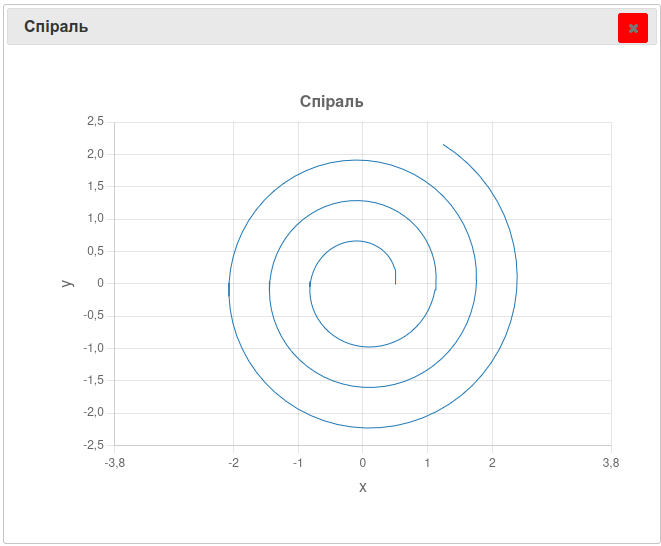

Коли ви створюєте список покупок у програмі, вимикаєте калькулятор чи закриваєте гру, усі змінні, списки й результати обчислень миттєво зникають з пам'яті комп'ютера. Наступного разу програму доводиться запускати «з чистого аркуша». Річ у тім, що оперативна пам'ять (RAM), у якій живуть наші змінні під час виконання програми, працює лише доти, доки програма запущена, — щойно вона завершується, ця пам'ять очищується. Щоб дані зберігалися надійно й довго, навіть після вимкнення комп'ютера, потрібна постійна пам'ять — диск або SSD, де інформація зберігається у вигляді файлів.
Велика частина інформації — журнали подій, налаштування програм, результати обчислень, текстові документи, збереження ігор, історія повідомлень — зберігається саме у файлах. Щоб обробляти таку інформацію, найчастіше доведеться читати або писати в один чи кілька файлів. Python має для цього багато зручних інструментів.
.readlines()Перш ніж перейти до прикладу, створіть файл у своєму улюбленому текстовому редакторі з таким вмістом:
яблуко
банан
апельсин
груша
Збережіть цей файл у своєму поточному каталозі з ім'ям frukty.txt.
Потім протестуйте наступний код:
fayl_vh = open("frukty.txt", "r")
riadky = fayl_vh.readlines()
print(riadky)
for riadok in riadky:
print(riadok)
fayl_vh.close()
🖥 Результат:
['яблуко\n', 'банан\n', 'апельсин\n', 'груша\n']
яблуко
банан
апельсин
груша
Щодо цього прикладу слід зробити кілька коментарів:
open() відкриває файл frukty.txt. Файл відкривається лише для читання, як вказує другий аргумент "r" (від read) функції open(). Зверніть увагу, що файл ще не прочитано, а лише відкрито (подібно до того, як ми відкриваємо книгу, але ще не читаємо її). Курсор читання готовий прочитати перший символ файлу. Інструкція open("frukty.txt", "r") передбачає, що файл frukty.txt знаходиться в тому каталозі, з якого запущено інтерпретатор Python. Якщо це не так, потрібно вказати шлях до файлу — наприклад, /home/user/frukty.txt для Linux чи macOS, або C:\Users\user\frukty.txt для Windows..readlines(). Тут використано вже знайомий синтаксис obiekt.metod() (Розділ 3 «Виведення даних»). Метод .readlines() діє на об'єкт fayl_vh, переміщуючи вказівник читання від початку до кінця файлу, а потім повертає список усіх рядків файлу (у нашій аналогії з книгою це відповідало б прочитанню всіх її рядків)..close(). Метод .close(), застосований до fayl_vh, закриває файл (як закриття книги). Він нічого не повертає, але змінює стан об'єкта на «закритий файл».За п'ять рядків коду файл прочитано, перебрано і виведено.
Кожен елемент списку
riadkyє рядком — Python читає вміст файлу саме як рядки. Кожен елемент спискуriadkyзакінчується символом\n— «символом нового рядка» (англ. line feed), який дозволяє переходити від одного рядка до наступного. Часто цей символ також називають «символом повернення каретки» — цей вираз нам здається інтуїтивнішим, і ми будемо використовувати його далі в книзі. За замовчуванням інструкціяprint()виводить текст, а потім сама додає перехід на новий рядок. Це накладається на символ\n, який уже є в кінці кожного рядка файлу, — тому й здається, що між рядками з'являється порожній рядок.
Навіщо взагалі обов'язково закривати файл? По-перше, поки файл відкритий вашою програмою, операційна система може заблокувати його для інших програм — наприклад, ви не зможете видалити чи перейменувати його вручну. По-друге, якщо програма раптово завершиться аварійно, дані, які ви намагалися записати, можуть «зависнути» в буфері та так і не потрапити на диск. По-третє, відкриті файли просто споживають ресурси комп'ютера, тож їх варто звільняти, щойно робота з ними завершена.
А що станеться, якщо спробувати прочитати файл після того, як його вже закрито? Подивімося:
fayl_vh = open("frukty.txt", "r")
print(fayl_vh.readlines())
fayl_vh.close()
print(fayl_vh.readlines())
🖥 Результат:
['яблуко\n', 'банан\n', 'апельсин\n', 'груша\n']
Traceback (most recent call last):
File "chytannya_readlines.py", line 4, in <module>
print(fayl_vh.readlines())
ValueError: I/O operation on closed file.
Перший виклик .readlines() спрацьовує без проблем — файл ще відкритий. Але після fayl_vh.close() об'єкт fayl_vh переходить у стан «закритий файл», і будь-яка спроба знову щось із нього прочитати призводить до помилки ValueError: I/O operation on closed file. Python таким чином захищає нас від роботи з ресурсом, який уже звільнено.
withУ Python є ключове слово with, яке дозволяє відкривати й закривати файл ефективним способом. Якщо під час відкриття чи читання файлу станеться помилка, with гарантує, що файл буде коректно закрито — на відміну від попередніх прикладів, де про закриття потрібно було дбати самостійно. Ось той самий приклад із with:
with open("frukty.txt", 'r') as fayl_vh:
riadky = fayl_vh.readlines()
for riadok in riadky:
print(riadok)
🖥 Результат:
яблуко
банан
апельсин
груша
Інструкція
withвводить блок інструкцій, який повинен мати відступ. Саме в цьому блоці виконуються всі операції з файлом. Після виходу з блоку Python автоматично закриє файл — метод.close()більше не потрібен.
.read()Метод .read() читає весь вміст файлу і повертає його у вигляді єдиного рядка:
with open("frukty.txt", "r") as fayl_vh:
vmist = fayl_vh.read()
print(repr(vmist))
🖥 Результат:
'яблуко\nбанан\nапельсин\nгруша\n'
.readline()Метод .readline() (без s в кінці) читає один рядок файлу і повертає його у вигляді рядка. При кожному новому виклику .readline() повертає наступний рядок. У поєднанні з циклом while цей метод дозволяє читати файл рядок за рядком:
with open("frukty.txt", "r") as fayl_vh:
riadok = fayl_vh.readline()
while riadok != "":
print(riadok)
riadok = fayl_vh.readline()
🖥 Результат:
яблуко
банан
апельсин
груша
Ось простий і елегантний спосіб перебору файлу:
with open("frukty.txt", "r") as fayl_vh:
for riadok in fayl_vh:
print(riadok)
🖥 Результат:
яблуко
банан
апельсин
груша
Об'єкт fayl_vh є «ітерованим», тому цикл for попросить Python читати файл рядок за рядком. Такий підхід ще й економніший за .readlines(): файл читається порціями, по одному рядку, а не завантажується цілком у пам'ять, — це особливо важливо для великих файлів.
Надалі віддавайте перевагу саме цьому методу.
Розглянуті методи дають доступ до вмісту файлу: рядок за рядком (.readline()), повністю в одному рядку (.read()), або повністю у вигляді списку рядків (.readlines()). У Python також можна перейти до певного місця у файлі за допомогою методу .seek(), але це виходить за рамки цієї книги.
.strip()Як ми щойно бачили, кожен рядок, прочитаний із файлу, закінчується прихованим символом \n. Найчастіше цей символ заважає — наприклад, якщо ми хочемо порівняти прочитаний рядок з якимось рядком, чи згодом використати його як частину іншого рядка. Щоб прибрати зайві пробіли та символ \n з початку й кінця рядка, використовують метод .strip():
with open("frukty.txt", "r") as fayl_vh:
for riadok in fayl_vh:
print(riadok.strip())
🖥 Результат:
яблуко
банан
апельсин
груша
Тепер, оскільки \n видалено з кожного рядка ще до виклику print(), порожні рядки між елементами зникли. .strip() варто застосовувати практично щоразу, коли прочитаний із файлу рядок треба порівняти з іншим значенням, перетворити на число чи додати до списку.
Запис у файл настільки ж простий, як і читання. Розглянемо приклад:
mista = ["Київ", "Львів", "Одеса"]
with open("mista.txt", "w") as fayl_vykh:
for misto in mista:
znakiv = fayl_vykh.write(misto)
print(znakiv)
🖥 Результат:
4
5
5
Кілька коментарів щодо цього прикладу:
mista.mista.txt у режимі запису — символ "w" (від write). Інструкція with створює блок інструкцій, який повинен мати відступ.mista за допомогою циклу for..write() застосовується до об'єкта fayl_vykh. Зверніть увагу, що при кожному виклику .write() в інтерпретаторі відображається кількість записаних символів. Це стосується лише інтерактивного інтерпретатора: у звичайному скрипті ці значення на екрані не з'являться.Якщо відкрити файл mista.txt у текстовому редакторі, побачимо: КиївЛьвівОдеса. Це не зовсім той результат, якого ми очікували, — адже хотілося, щоб кожна назва була на окремому рядку. Ми забули додати символ кінця рядка після кожного слова. На відміну від print(), метод .write() не переводить курсор на новий рядок автоматично — цей символ завжди потрібно додавати самостійно. Виправимо це форматованим виведенням:
mista = ["Київ", "Львів", "Одеса"]
with open("mista.txt", "w") as fayl_vykh:
for misto in mista:
znakiv = fayl_vykh.write(f"{misto}\n")
print(znakiv)
🖥 Результат:
5
6
6
\n) після кожної назви.Тепер вміст файлу mista.txt:
Київ
Львів
Одеса
Як бачите, у Python читати чи писати у файл відносно просто.
У наведених вище прикладах ми користувалися лише двома режимами — "r" та "w". Насправді open() підтримує чотири основні режими, які вказуються другим аргументом:
| Режим | Назва | Призначення |
|---|---|---|
"r" |
Read (читання) | Режим за замовчуванням. Файл лише читають; якщо файлу немає на диску, виникає помилка FileNotFoundError. |
"w" |
Write (запис) | Якщо файл уже існує, його вміст повністю стирається, і запис починається «з чистого аркуша». Якщо файлу немає — Python створює його сам. |
"a" |
Append (дописування) | Нові дані додаються в самий кінець файлу; наявний вміст не видаляється. Якщо файлу немає — Python створює його. |
"x" |
Exclusive creation (створення нового файлу) | Створює новий файл, але лише якщо такого файлу ще не існує; якщо файл уже є, виникає помилка — це захищає від випадкового перезапису. |
Режим
"w"варто використовувати обережно: він мовчки й без попереджень стирає весь наявний вміст файлу. Якщо мета — зберегти старі дані й лише додати нові, потрібен режим"a".
"a")Якщо ми хочемо зберегти вже наявний вміст файлу та лише додати до нього нову інформацію, використовують режим "a":
with open("mista.txt", "a") as fayl_vykh:
znakiv = fayl_vykh.write("Харків\n")
print(znakiv)
🖥 Результат:
7
Тепер файл mista.txt міститиме:
Київ
Львів
Одеса
Харків
Кожен наступний запуск програми з режимом "a" додаватиме новий рядок у кінець файлу, не торкаючись того, що вже там є, — це зручно, наприклад, для журналів подій або програм, які поступово накопичують дані (щоденник тренувань, історія повідомлень тощо).
withЗа допомогою with можна відкрити одразу два (і більше) файли. Розглянемо приклад:
with open("frukty.txt", "r") as fayl1, open("frukty2.txt", "w") as fayl2:
for riadok in fayl1:
fayl2.write("*" + riadok)
Якщо frukty.txt містить:
яблуко
банан
апельсин
груша
то вміст frukty2.txt буде:
*яблуко
*банан
*апельсин
*груша
У цьому прикладі with дозволяє дуже компактний запис, звільняючи від двох викликів .close(). Якщо хочете піти далі: інструкція with є більш загальною і може використовуватися в інших контекстах[^2].
Ми бачили, що спеціальний символ \n відповідає переходу на новий рядок — це стандарт у Unix (macOS і Linux). Однак Windows традиційно використовує два символи: \r (повернення каретки, успадковане від друкарських машинок) і \n, як у Unix. У Python 2 залежно від версії читання файлу іноді видаляло \r, а іноді залишало. На щастя, функція open() у Python 3 обробляє це автоматично й повертає лише \n — навіть якщо файл був створений у Windows і початково містив \r.
Іноді трапляється прикра проблема: програма зчитує файл з українським текстом, але замість очікуваних літер у консолі з'являються незрозумілі значки («кракозябри»). Причина — комп'ютер намагається прочитати файл за неправильними чи застарілими правилами кодування символів: спеціальної таблиці, яка перекладає кожну літеру в число, зрозуміле процесору.
Щоб уникнути цієї проблеми, під час роботи з файлами, що містять текст українською (чи будь-якою іншою не-англійською) мовою, варто явно вказувати сучасний міжнародний стандарт кодування — encoding="utf-8":
with open("text.txt", "r", encoding="utf-8") as fayl_vh:
print(fayl_vh.read())
Той самий аргумент encoding="utf-8" варто додавати і під час запису у файл, щоб бути впевненим, що дані збережуться коректно незалежно від налаштувань операційної системи:
with open("text.txt", "w", encoding="utf-8") as fayl_vykh:
fayl_vykh.write("Привіт, Python!")
Методи читання файлу (наприклад, .readlines()) завжди повертають рядки. Так само, щоб записати щось у файл, методу .write() потрібно передати саме рядок. Щоб врахувати ці обмеження, знадобляться функції перетворення типів із Розділу 2 «Змінні»: int(), float() та str(). Ці функції важливі при читанні чи записі чисел у файл: числа у файлі — це завжди текст (рядки) з погляду .readlines(), тож їх потрібно перетворити (на ціле число чи float), якщо ви плануєте виконувати з ними обчислення.
Ось типовий приклад: запис числа у файл потребує str(), а зчитування назад — int() або float():
chyslo = 45
with open("otsinky.txt", "w", encoding="utf-8") as fayl_vykh:
fayl_vykh.write(str(chyslo) + "\n")
with open("otsinky.txt", "r", encoding="utf-8") as fayl_vh:
for riadok in fayl_vh:
otsinka = int(riadok.strip())
if otsinka >= 10:
print("Висока оцінка:", otsinka)
🖥 Результат:
Висока оцінка: 45
Той самий принцип (прочитати рядок → .strip() → перетворити на число чи очищений рядок → додати в список) добре поєднується з побудовою списку в циклі for (підрозділ 5.5.4 «Обробка списків»). Наприклад, щоб відновити список даних, збережений минулого разу:
spysok_pokupok = []
with open("items.txt", "r", encoding="utf-8") as fayl_vh:
for riadok in fayl_vh:
ochyshcheno = riadok.strip()
spysok_pokupok.append(ochyshcheno)
print("Список покупок відновлено:", spysok_pokupok)
🖥 Результат:
Список покупок відновлено: ['молоко', 'хліб', 'яйця']
Тепер, коли ви вмієте читати й писати файли в Python, ви здатні працювати з великою кількістю різноманітної інформації. Будьте лише уважні до форматів файлів — тобто того, як саме дані структуровані всередині них (наприклад, CSV, JSON чи власний текстовий формат). Це особливо важливо, коли файл створено іншою програмою або іншою людиною: перш ніж писати код обробки, варто відкрити файл і подивитися на його реальну структуру.
Працюючи з файлами, початківці регулярно натрапляють на той самий невеликий набір помилок.
Файл не знайдено (FileNotFoundError).
with open("zaguble.txt", "r") as fayl_vh:
print(fayl_vh.read())
🖥 Результат:
Traceback (most recent call last):
File "fayl_ne_znaydeno.py", line 2, in <module>
with open("zaguble.txt", "r") as fayl_vh:
FileNotFoundError: [Errno 2] No such file or directory: 'zaguble.txt'
Це трапляється, коли ви намагаєтесь прочитати файл, якого немає на диску, або припустилися одруку в його імені чи розширенні. Перевірте, чи лежить файл у тому самому каталозі, що й ваш скрипт, і чи правильно написано його ім'я.
Випадкове знищення даних режимом "w". Якщо мета була лише додати запис, а помилково вжито режим "w" замість "a", Python миттєво й без попереджень очистить увесь наявний вміст файлу. Щоб зберегти стару інформацію, завжди перевіряйте, який саме режим ви вказуєте: "a" для дописування, "w" — лише коли справді потрібно почати «з чистого аркуша».
Забули перетворити рядок на число.
riadok = "10\n"
print(riadok + 5)
🖥 Результат:
Traceback (most recent call last):
File "zabuly_peretvoryty.py", line 3, in <module>
print(riadok + 5)
TypeError: can only concatenate str (not "int") to str
Прочитаний із файлу рядок завжди залишається текстом, навіть якщо виглядає як число, — щоб виконувати з ним арифметичні операції, спершу застосуйте int(riadok.strip()) або float(riadok.strip()) .
Створіть текстовий файл otsinky.txt, де кожен рядок міститиме рівно одну оцінку. Наприклад, скопіюйте у файл такий вміст:
13.5
17.0
9.5
11.0
15.5
8.0
12.5
16.0
10.0
14.5
Створіть скрипт Python, який читає кожен рядок цього файлу, витягує оцінки у вигляді float і зберігає їх у списку. Завершіть скрипт обчисленням і виведенням середнього балу з двома десятковими знаками.
Використайте файл otsinky.txt з попередньої вправи. Створіть скрипт Python, який читає кожен рядок файлу, видобуває оцінки у вигляді float і зберігає їх у списку. Потім скрипт має записати оцінки у новий файл otsinky2.txt — по одній оцінці на рядок, після кожної позначка «відраховано», якщо оцінка менша за 10, і «зараховано», якщо оцінка більша або дорівнює 10. Усі оцінки виводьте з одним десятковим знаком. Наприклад, перші три очікувані рядки файлу otsinky2.txt:
13.5 зараховано
17.0 зараховано
9.5 не зараховано
Створіть файл all_otsinky.txt з оцінками (від 1 до 12, по одній на рядок). Напишіть скрипт, який читає цей файл і записує оцінки, більші або рівні 7, в окремий файл good_otsinky.txt
Створіть файл zhurnal.txt з оцінками учнів класу за контрольну роботу (по одному числу на рядок). Напишіть скрипт, який зчитує всі оцінки у список чисел, знаходить максимальну й мінімальну оцінку (за допомогою max() та min()), обчислює середній бал класу, а потім виводить охайний звіт на екран і дописує цей самий звіт у кінець файлу zvit.txt (режим "a").
Створіть скрипт spiral.py, який обчислює декартові координати двовимірної спіралі.
Декартові координати x та y точки A на колі радіуса r виражаються через кут theta так:
Щоб обчислити координати, які описують спіраль, потрібно одночасно змінювати дві величини:
Тригонометричні функції синуса й косинуса доступні в модулі math. Щоб їх використати, додайте на початку скрипта:
import math
Функція синуса — math.sin(), косинуса — math.cos(). Обидві приймають аргумент у радіанах. Математична константа pi доступна через math.pi:
import math
print(math.sin(0))
print(math.sin(math.pi / 2))
print(math.cos(math.pi))
🖥 Результат:
0.0
1.0
-1.0
Збережіть декартові координати у файлі spiral.dat, дотримуючись такого формату:
Перші рядки spirala.dat мають виглядати так:
0.50000 0.00000
0.59700 0.05990
0.68605 0.13907
0.76427 0.23642
0.82895 0.35048
0.87758 0.47943
[...]
Після того як файл spiral.dat згенеровано, візуалізуйте спіраль наступним кодом (можна дописати в той самий скрипт або створити новий):
x = []
y = []
with open("spiral.dat", "r") as file:
for line in file:
parts = line.split()
x.append(float(parts[0]))
y.append(float(parts[1]))
# Побудова графіка
plt.plot(x, y)
plt.title("Спіраль")
plt.xlabel("x")
plt.ylabel("y")
plt.axis("equal")
plt.grid(True)
plt.show()
Модуль
matplotlibтут використано для візуалізації спіралі. Спробуйте поекспериментувати зі значеннями theta та r і кроком їхнього збільшення, щоб побудувати інші спіралі.

import math
import matplotlib.pyplot as plt
# Генерація та запис координат
with open("spiral.dat", "w") as file:
a = 0.5
b = 0.1
for i in range(200):
t = i * 0.1
r = a + b * t
x = r * math.cos(t)
y = r * math.sin(t)
file.write(f"{x:10.5f} {y:10.5f}\n")
# Зчитування координат
x = []
y = []
with open("spiral.dat", "r") as file:
for line in file:
parts = line.split()
x.append(float(parts[0]))
y.append(float(parts[1]))
# Побудова графіка
plt.plot(x, y)
plt.title("Спіраль")
plt.xlabel("x")
plt.ylabel("y")
plt.axis("equal")
plt.grid(True)
plt.show()
open()